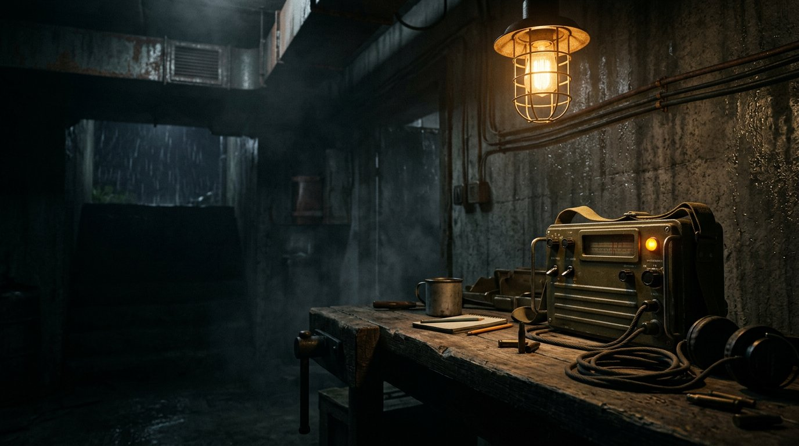

Banc d’essai Phase 01
Interface tactique
Essayez les outils du futur guide : trouvez un modèle, comparez ses statistiques en jeu et choisissez une ambiance de Tarkov.
Aperçu technique · pas encore le guide public
Patch 1.3.0.001 / Données
Comparer l’équipement
Filtrez les modèles et sélectionnez-en jusqu’à trois pour les comparer côte à côte.
6 modèles affichés
Aucun modèle ne correspond. Effacez la recherche ou changez de famille.
-
AK-74NFusil d’assaut · 5,45 × 39
- Ergonomie
- 31
- Cadence en coups par minute
- 650
-
M4A1Fusil d’assaut · 5,56 × 45
- Ergonomie
- 48
- Cadence en coups par minute
- 800
-
MP5Pistolet-mitrailleur · 9 × 19
- Ergonomie
- 50
- Cadence en coups par minute
- 800
-
PP-19-01Pistolet-mitrailleur · 9 × 19
- Ergonomie
- 35
- Cadence en coups par minute
- 700
-
MP-153Fusil à pompe · Calibre 12
- Ergonomie
- 43
- Cadence en coups par minute
- 40
-
Saiga-12KFusil à pompe · Calibre 12
- Ergonomie
- 30
- Cadence en coups par minute
- 40
02 / Interactions
Composants et préférences
Les contrôles partagés sont utilisables au clavier, au toucher et à la souris.
03 / Audio
Ambiances audio
Trois ambiances originales en boucle et deux signaux d’interface, à écouter à la demande.

Écoute locale
MP3 · StéréoPrêt à écouter.
04 / Références
Sources de l’atelier
Contexte vérifié le 18 novembre 2026. Le relevé d’équipement est communautaire ; la note de patch vient de Battlestate Games.
Données du catalogue
Source : Tarkov.dev, export PvP permanent. Les fichiers sont locaux et l’atelier utilise seulement six entrées de démonstration. Une valeur manquante ne vaut pas zéro.
Patch et annonce Unity 6
La note 1.3.0.0 du 29 octobre annonce la migration Unity 6 pour 1.3.5.0. Nous n’avons pas trouvé d’annonce officielle attestant le déploiement de 1.3.5.0 au relevé. Le canal public Battlestate Games publie aussi des changements non numérotés.